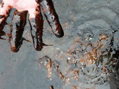
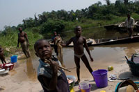

|
|
Petroleum, Pollution and Poverty in the Niger DeltaThe Niger Delta is one of the 10 most important wetland and coastal marine ecosystems in the world and is home to some 31 million people.1 The Niger Delta is also the location of massive oil deposits, which have been extracted for decades by the government of Nigeria and by multinational oil companies. Oil has generated an estimated $600 billion since the 1960s.2 Despite this, the majority of the Niger Delta's population lives in poverty. The United Nations Development Programme (UNDP) describes the region as suffering from "administrative neglect, crumbling social infrastructure and services, high unemployment, social deprivation, abject poverty, filth and squalor, and endemic conflict."3 The majority of the people of the Niger Delta do not have adequate access to clean water or health-care.4 Their poverty, in contrast with the wealth generated by oil, has become one of the world's starkest and most disturbing examples of the "resource curse". For the people of the Niger Delta, environmental quality and sustainability are fundamental to their overall wellbeing and development. According to UNDP, more than 60 per cent of the people in the region depend on the natural environment for their livelihood.5 For many, the environmental resource base, which they use for agriculture, fishing and the collection of forest products, is their principal or sole source of food. Pollution and environmental damage, therefore, pose significant risks to human rights. Click image to enlarge © AI An Amnesty International mission delegate's fingers covered in oil from an oil spill at Ikarama, Bayelsa State. This photograph was taken eight months after the spill by Amnesty International researchers. There are often long delays in clearing up after oil spills in the Niger Delta. Oil spills, waste dumping and gas flaring are endemic in the Niger Delta. This pollution, which has affected the area for decades, has damaged the soil, water and air quality. Hundreds of thousands of people are affected, particularly the poorest and those who rely on traditional livelihoods such as fishing and agriculture. The human rights implications are serious, under-reported and have received little attention from the government of Nigeria or the oil companies. According to a study carried out by a team of Nigerian and international environmental experts in 2006,6 the Niger Delta is "one of the world's most severely petroleum-impacted ecosystems". They stated: "The damage from oil operations is chronic and cumulative, and has acted synergistically with other sources of environmental stress to result in a severely impaired coastal ecosystem and compromised the livelihoods and health of the region's impoverished residents." Oil Spills There are a number of reasons why oil spills happen so frequently in the Niger Delta. Spills result from corrosion of oil pipes, poor maintenance of infrastructure, spills or leaks during processing at refineries,8 human error and as a consequence of deliberate vandalism or theft of oil.9 In August and December 2008, two major oil spills disrupted the lives of the 69,000 or so people living in Bodo, a town in Ogoniland in the Niger Delta. Both spills continued for weeks before they were stopped. Estimates s uggest that the volume of oil spilled was as large as the Exxon Valdez spill in Alaska in 1989.10 Three years on, the prolonged failure of the Shell Petroleum Development Company of Nigeria, a subsidiary of Royal Dutch Shell, to clean up the oil that was spilled, continues to have catastrophic consequences for the Bodo community. The lives of tens of thousands of people have been directly affected by the spills and the ongoing pollution. Many are worried about their health and are afraid to eat locally caught fish or drink water from streams or rain water, as they did before the oil spills. Gas Flaring Click image to enlarge A woman and children walking along a road while in the distance a gas flare burns near to the community of Iwhrekan, Nigeria, 25 February 2008. © Kadir van Lohuizen/NOOR In recent years, communities, NGOs and some health professionals have raised concerns about the impact of gas flaring on human health. The health risks may be particularly high for people with underlying health problems, for young children and the elderly and for pregnant women. Despite these repeated expressions of concern, neither the government nor the oil companies have carried out any specific study to look at the impacts of flaring on human health. This serious failure leaves [thousands] of people facing unknown short- and long-term risks. Nigeria has prohibited gas flaring since 1984, unless a ministerial consent has been issued.12 Although the government has announced various deadlines for the cessation of flaring, each deadline has passed and flaring continues. Given the potential for serious negative impacts on human health, as well as on livelihoods, the Nigerian government should conduct investigations into the effects on health and agricultural production. Such investigations are necessary in order for the government to properly discharge its international legal obligation to protect the human rights of the people of Nigeria. The exposure of people to potentially serious risks to health requires that decisive and swift action is taken to investigate and monitor their health status, to protect vulnerable groups and to end the practice of flaring. Monitoring of health impacts should continue even after flaring has ended to ensure that any long-term health impacts are identified and addressed. Human Rights Impact It is important that the impact of the oil industry on the environment in the Niger Delta is understood as occurring in a context where the livelihoods, health and access to food and clean water of hundreds of thousands of people are closely linked to the land and environmental quality. The environmental damage that has been done, and continues to be done, as a consequence of oil production in the Niger Delta, has led to serious violations of human rights. People living in the Niger Delta have to drink, cook with, and wash in polluted water; they eat fish contaminated with oil and other toxins - if they are lucky enough to still be able to find fish; the land they use for farming is being destroyed because of the lack of respect for the ecosystem necessary for their survival; after oil spills the air they breathe reeks of oil and gas and other pollutants; they complain of breathing problems, skin lesions and other health problems, but their concern are not taken seriously and they have almost no information on the impacts of pollution. Cleaning Up the Mess Click image to enlarge ©Amnesty International - Puddles of water and oil, the ground still sticky from a thick layer of oil along the Rukpokwu-Rumueke Oil pipeline, March 2004. While the priority is to prevent pollution that leads to the violation of human rights, swift and effective clean-up and rehabilitation of pollution and environmental damage, once these have occurred, is critical to the protection of human rights. If pollution and environmental damage persist, then so, frequently does the associated violation of human rights, driving people deeper into poverty through long-term damage to livelihoods and health. Clean-up of oil pollution in the Niger Delta is frequently both slow and inadequate, leaving people to cope with the ongoing impacts of the pollution on their livelihoods and health. Failure to swiftly contain, clean up and remediate oil spills can increase the danger of fires breaking out and causing damage to life and property. Fires may be started deliberately or accidentally but can be devastating. Both the government of Nigeria and Shell - the main oil company operating on land in the Niger Delta - have a responsibility to clean up oil operations and come clean about the human impact of the oil industry in the Niger Delta. Read more: Amnesty International, "Petroleum, Pollution and Poverty in the Niger Delta," Report For technical details relating to the geospatial analysis presented on this site, visit the website of the American Association for the Advancement of Science.
1Report of the Niger Delta Technical Committee, November 2008, p102. Figure is based on the 2006 census.
2G. Wurthmann, "Ways of Using the African Oil Boom for Sustainable Development", African Development Bank, Economic Research Working Paper Series, No. 84, March 2006.
3UNDP, Niger Delta Human Development Report, 2006.
4UNDP, Niger Delta Human Development Report, 2006.
5United Nations Development Programme (UNDP), Niger Delta Human Development Report, 2006, p74.
6Nigerian Conservation Foundation, WWF UK and International Union for Conservation of Nature (IUCN), Commission on Environmental, Economic and Social Policy, with Federal Ministry of Environment (Abuja), "Niger Delta Natural Resources Damage Assessment and Restoration Project Scoping Report", May 2006.
7Amnesty International, "Nigeria: Petroleum, Pollution and Poverty in the Niger Delta", (2009) p27.
8A 1995 World Bank report noted: "Lumps from oil spillage can be directly observed and oil films cover the water surface. Spills of raw materials or leaks during processing can cause serious surface water, soil, and groundwater contamination," World Bank, Defining an Environmental Development Strategy for the Niger Delta, 25 May 1995, Vol II, Industry and Energy Operations Division West Central Africa Department, p35.
9Oil experts assert that many pipelines and installations in the Niger Delta have not been adequately maintained, and this is a contributory factor in corrosion and leaks. See: "Double standards? International Best Practice Standards to Prevent and Control Pipeline Oil Spills, Compared with Shell Practices in Nigeria", Professor Richard Steiner, University of Alaska, USA, November 2008. Available at: http://www.milieudefensie.nl/english/shell/the-people-of-nigeria-versus-shell
10 Martyn Day, Leigh Day & Co Solicitors, 3 August 2011. (Martyn Day)
11Environmental Rights Action and The Climate Justice Programme, "Gas Flaring in Nigeria: A human rights, environmental and economic monstrosity", June 2005. In this report the authors quote from British government documents in the 1960s that show awareness of gas flaring as a problem.
12The Associated Gas Reinjection Act 1979 required every company to submit a plan on how they would implement the reinjection of associated gas, including a scheme for the utilization of all produced gas (section 2).
Under section 3 of the Associated Gas Reinjection Act 1979, a consent to continue flaring can only be issued if the Minister is satisfied that utilization or reinjection is not appropriate or feasible in a particular field or fields. The Associated Gas Reinjection (Continued Flaring of Gas) Regulations 1984 include a range of conditions for continued gas flaring but also allows the Minister to authorize the production of oil from a field that does not satisfy any of the conditions specified in these Regulations. Despite requests by Environmental Rights Action/Friends of the Earth Nigeria, no consents or conditions have been disclosed by any of the companies. From: www.climatelaw.org.
13African Commission on Human and Peoples' Rights, Decision on communication of The Social and Economic Rights Action Center and the Center for Economic and Social Rights/Nigeria (155/96), para 70. Decision made at the 30th ordinary session of the African Commission of Human and Peoples' Rights, Banjul, 13-27 October 2001, available at http://www1.umn.edu/humanrts/africa/comcases/155-96b.html.
|
||
| © Copyright 2011 Amnesty International USA |


{kind=link}
{kind=link}
{kind=link}